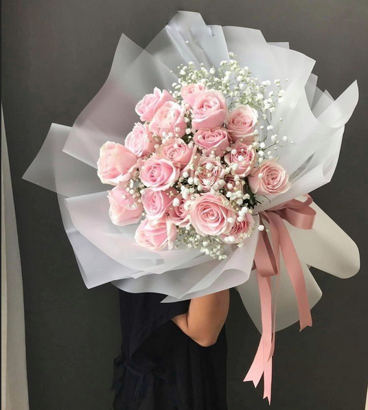

O nas

L'Art de Fleur Boutique to coś więcej niż punkt sprzedaży ciętych roślin. Naszą misją jest wprowadzanie florystyki wysokiej próby do codziennego życia naszych klientów. Specjalizujemy się w sektorze Premium Floristry, oferując unikalne kompozycje oparte na sezonowych produktach od lokalnych dostawców oraz egzotycznych gatunkach sprowadzanych na specjalne zamówienie. Wyróżnia nas podejście slow-design- każdy bukiet jest traktowany jak osobne dzieło sztuki, tworzone z dbałością o detale, fakturę i trwałość. Naszą domeną są autorskie flowerboxy oraz innowacyjne systemy subskrypcji kwiatowej, które pozwalają naszym klientom cieszyć się świeżością natury w biurach i domach przez cały rok, bez konieczności pamiętania o kolejnych zamówieniach.